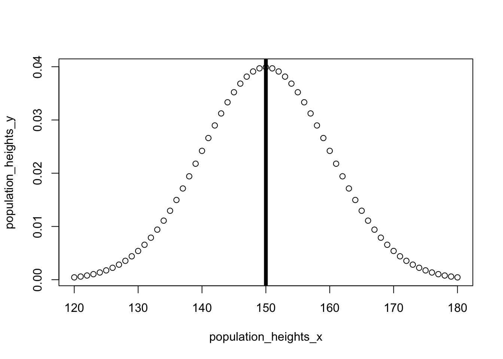
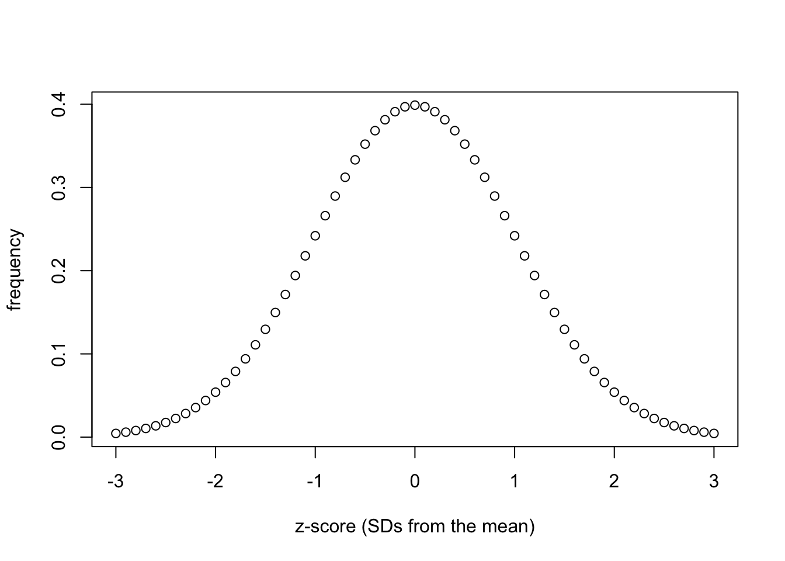
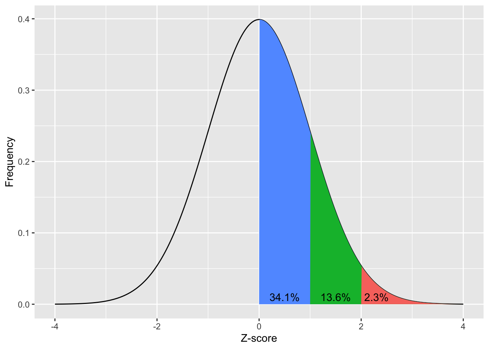
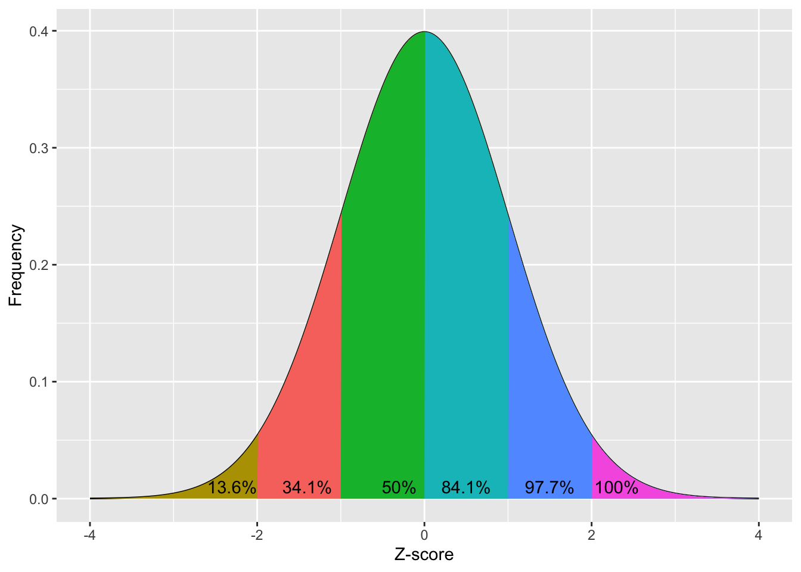

Parametric statistics often compare values to a normal distribution of expected results, based on the estimated mean and SD. Lets start by showing a (made up) normal distribution of heights in centimeters:
So lets say the average person’s height is 150cm, and the standard deviation of height across the population is 10cm. The data would look something like:
# Plot a normal distribution of heightspopulation_heights_x <-seq(120, # min180, # maxby =1)population_heights_y <-dnorm( population_heights_x,mean =150,sd =10)plot( population_heights_x, population_heights_y)# Add line to show meanabline(v=150, # where the line for the mean will be lwd=5)

// explain that a z-score distribution is just a standardised version of the above distribution
z-distribution
# Plot a normal distribution of heightsz_score_x <-seq(-3, # min3, # maxby = .1)z_score_y <-dnorm( z_score_x,mean =0,sd =1)plot( z_score_x, z_score_y)

For example, lets imagine that a man called John thinks he’s either unusually tall, or unusally short, but he isn’t sure which. He could compare his height to a normal distribution of heights, and see whether he’s in the top or bottom 2.5%.
# Plot a normal distribution of heightsz_score_x <-seq(-3, # min3, # maxby = .1)z_score_y <-dnorm( z_score_x,mean =0,sd =1)plot( z_score_x, z_score_y)# Add line to show meanabline(v=0, # where the line for the mean will be lwd=3)# Add line to show lower thresholdabline(v=-1.96,lwd=3,lty=3)# Add line to show higher thresholdabline(v=1.96,lwd=3,lty=3)

draw red blocks to highlight the values less than -1.96 and greater than 1.96
So lets say he’s 170cm tall, the average person is 150cm, and the standard deviation of height across the population is 10cm. The data would look something like:
# Plot a normal distribution of heightspopulation_heights_x <-seq(140, # min200, # maxby =1)population_heights_y <-dnorm( population_heights_x,mean =150,sd =10)plot( population_heights_x, population_heights_y)# Add line to show meanabline(v=150, # where the line for the mean will be lwd=5)# Add line to show John's heightabline(v=170, lwd=3,lty=3)

The thick line refers to the mean height, the dashed line refers to John’s height
You can see above that John is pretty unusually tall. To work out whether he’s in the top 5%, lets work out his z-score:
So based on the above, John’s Z-score is greater than 1.96, which I claimed above was meaningful. To understand why this is meaningful, lets start by plotting John’s score as a z-score:
# Plot a normal distribution of heightsz_score_x <-seq(-1, # min5, # maxby = .1)z_score_y <-dnorm( z_score_x,mean =0,sd =1)plot( z_score_x, z_score_y)# Add line to show meanabline(v=0, # where the line for the mean will be lwd=3)# Add line to show John's heightabline(v=john_z_score,lwd=3,lty=3)
As you may have noticed, these figures are identical in their distributions and the relative locations of the vertical lines. So when you have calculated a z-score you have calculated a standardised value of how many standard deviations you are above (or below) the mean. People have previously calculated that if you get a z-value of 1.96 and above then you are in the top 5 percentile. However, lets double check that using the pnorm function:
# compare the values below with the plot of the z_score plotpnorm(q =1.96, # put in the z-value heremean =0,sd =1,lower.tail = F)
[1] 0.0249979
The above p-value of .024998 shows that any Z-score above
Note that how you ask a question greatly impacts your approach, and so my claim that I’m in the top 5% of the population is very different to a more general claim I’m taller than the average person. So whether I’m in the top 5% of the population is a very